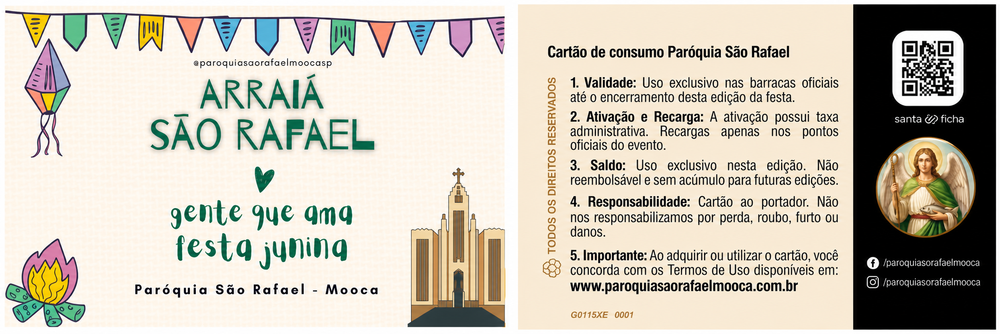

ARRAIÁ 2026
SÃO RAFAEL
gente que ama 🖤 festa junina
Nos Dias: 6 e 7 de junho, 13 e 14 de junho, 20 e 21 de junho,
27 e 28 de junho 4
e 5 de
julho.
Horários: Aos sábados e aos domingos das 18h às 22h
CALCULADORA DE PREÇOS
Selecione o produto na lista abaixo, ajuste a quantidade e clique em "Adicionar"
Nenhum produto encontrado para essa pesquisa.
| Item | Ação |
|---|---|
| Nenhum item adicionado. | |
CLÁUSULA PRIMEIRA – DO OBJETO
1.1. O presente termo estabelece as normas para aquisição, utilização e validade do sistema de cartões de aproximação (RFID) para o consumo de produtos e serviços nas barracas oficiais da Festa Junina 2026.
Cartões Oficiais da Festa


Atenção: Os cartões da edição anterior da festa poderão ser recolhidos e substituídos sem necessidade de pagamento da taxa de ativação. Conforme a disponibilidade.
CLÁUSULA SEGUNDA – DA AQUISIÇÃO E CUSTO DE ATIVAÇÃO
2.1. O usuário deverá adquirir o cartão físico mediante o pagamento da taxa de ativação no valor de R$ 6,00 (seis reais).
2.2. As recargas poderão ser realizadas por meio de dinheiro, cartão de crédito e débito, conforme disponibilidade nos pontos oficiais do evento.
2.3. DA TROCA FINAL: Ao término do evento ou após o consumo total dos créditos, a devolução do cartão físico íntegro, sem danos que impeçam sua reutilização, nos caixas autorizados dará ao portador o direito à troca por 01 (uma) garrafa de água mineral, não havendo devolução do valor de ativação em moeda corrente.
CLÁUSULA TERCEIRA – DA VALIDADE DOS CRÉDITOS
3.1. Os créditos inseridos no cartão são válidos exclusivamente para o período de realização da Festa Junina 2026.
3.2. O uso dos créditos é permitido até o horário oficial de encerramento das atividades das barracas.
3.3. DA EXPIRAÇÃO: Saldos remanescentes expiram automaticamente ao encerramento da festividade do ano vigente, não sendo permitida a transferência ou acumulação de valores para edições futuras ou outros eventos.
CLÁUSULA QUARTA – DA POLÍTICA DE NÃO REEMBOLSO
4.1. CONVERSÃO EM CONSUMO: Ao carregar o cartão, o usuário converte o valor em créditos para uso exclusivo na festa. Por essa razão, não haverá devolução de valores, estorno ou reembolso de saldos não utilizados.
4.2.Recomendamos que o carregamento seja feito de acordo com a intenção de consumo, uma vez que a carga é definitiva e o saldo remanescente não é restituível.
CLÁUSULA QUINTA – DA RESPONSABILIDADE E PRIVACIDADE
5.1. DO ANONIMATO: O cartão de consumo é ao portador e não armazena dados pessoais, tais como CPF, nome ou correio eletrônico.
5.2. DA GUARDA E POSSE: A responsabilidade pela segurança e conservação do cartão é inteiramente do usuário.
5.3. DA PERDA OU ROUBO: Por ser um cartão sem identificação nominal:
- Não é possível realizar o bloqueio do dispositivo;
- Não haverá recuperação de saldo ou emissão de segunda via;
- O crédito contido no cartão será de livre uso de quem o detiver.
5.4. A utilização indevida, tentativa de fraude ou adulteração do cartão poderá resultar em seu bloqueio, sem prejuízo da adoção das medidas legais cabíveis junto às autoridades competentes.
CLÁUSULA SEXTA – DAS REGRAS DE UTILIZAÇÃO
6.1. O cartão é a única forma de pagamento aceita nas barracas oficiais identificadas.
6.2. É de responsabilidade do usuário conferir o saldo e os valores debitados no ato de cada recarga e consumo nas barracas, não sendo aceitas contestações posteriores.
6.3. Cartões danificados (dobrados, perfurados ou molhados) que impeçam a leitura do chip não serão substituídos ou reembolsados.
6.4. Em caso de indisponibilidade temporária do sistema, as operações poderão ser pausadas até a normalização, sendo retomadas assim que possível.
CLÁUSULA SÉTIMA – DAS DISPOSIÇÕES GERAIS
7.1. A aquisição e o carregamento do cartão implicam na aceitação automática e integral deste regulamento.
7.2. Eventuais casos omissos serão resolvidos pela Comissão Organizadora no local do evento.
SOBRE A FESTA
História
A Festa Junina da Paróquia São Rafael Mooca é um evento familiar com comidas típicas, música, brincadeiras e ações comunitárias. O trabalho é realizado por voluntários da paróquia, com o objetivo de celebrar a cultura junina e apoiar as iniciativas pastorais e sociais da comunidade.
Voluntariado
O sucesso da festa depende do trabalho dedicado de voluntários. Se você deseja contribuir nessa edição ou em futuras edições, inscreva-se para fazer parte da equipe de voluntários da paróquia São Rafael Mooca.
Programação
Horários: Aos sábados das 18h às 22h e aos domingos das 18h às 22h.
Dias: 6 e 7 de junho, 13 e 14 de junho, 20 e 21 de junho, 27 e 28 de junho, 4 e 5 de julho.
Meios de pagamento aceitos
- Cartão de Crédito e Débito (bandeiras Visa, Master e Elo)
- Pix
- Dinheiro
Como chegar
A Paróquia São Rafael Arcanjo na Mooca está localizada no Largo São Rafael, s/nº - Mooca, São Paulo - SP.
MAPA DA FESTA
Mapa simplificado para orientação rápida dos visitantes.
Toque na imagem para abrir em tela cheia e ampliar os detalhes.
BARRACAS E CARDÁPIO
Use a calculadora para saber o valor total para efetuar sua recarga.
EQUIPES DE APOIO
Equipes operacionais, de apoio e organização da festa:
- Caixas
- Compras
- Montagem
- Almoxarifado
- Comissão de Festa
- Comunicação e Som
PATROCINADORES
Caso seja de interesse em patrocinar a festa, entre em contato com a Secretaria Paroquial.
O nosso agradecimento às empresas e Apoiadores que colaboram com a realização da 53º Arraia São Rafael Mooca.
MOOCA